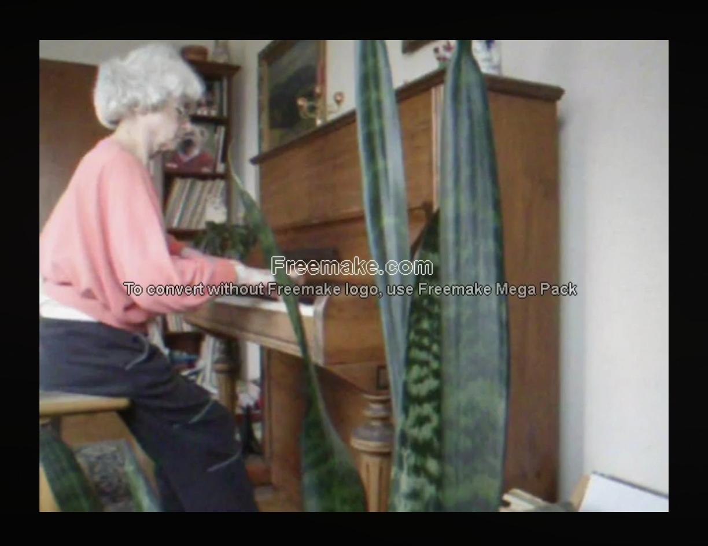

| Home | References |
Video Recording -- Marta Petrikova playing (practicing) on the piano at home --. The link below connects to a video recording (playing time approximately 37 minutes) made by the author at his mother's home in Marburg (Germany) in the Autumn of 2012. Marta Petrikova would always take advantage of any spare moment during her daily chores as a house wife in order to practice on the piano for a few minutes. Thus she appears in the video clad in whatever garments she happened to be wearing at home at that time. Due to its large size the video file is located on an external cloud server where it can be accessed via the following link. Depending on network speed it may take some time for the video to start and function correctly. Once the video is running the playing speed may alternatively be set to 1.25 (instead of 1.00) by klicking on the blue expand button at the lower right, or on the settings icon in the upper right corner, as the case may be. By this means Marta Petrikova's piano playing will become much more virtuoso-like (albeit in a rather artificial way, of course). Link |
 Photograph taken from the video. |